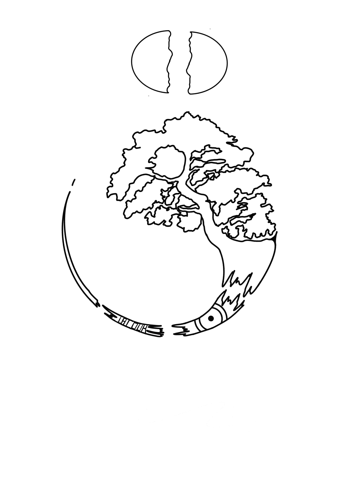
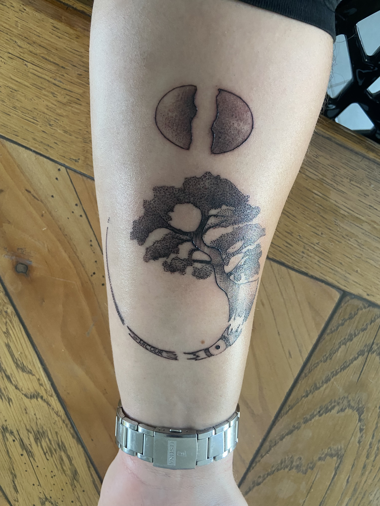
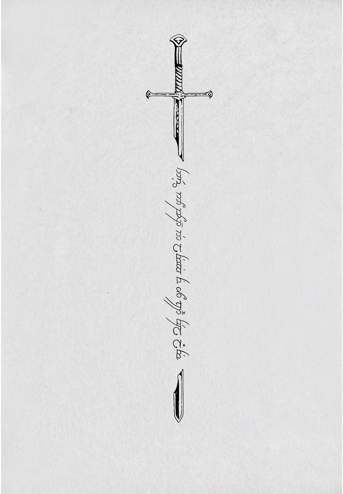
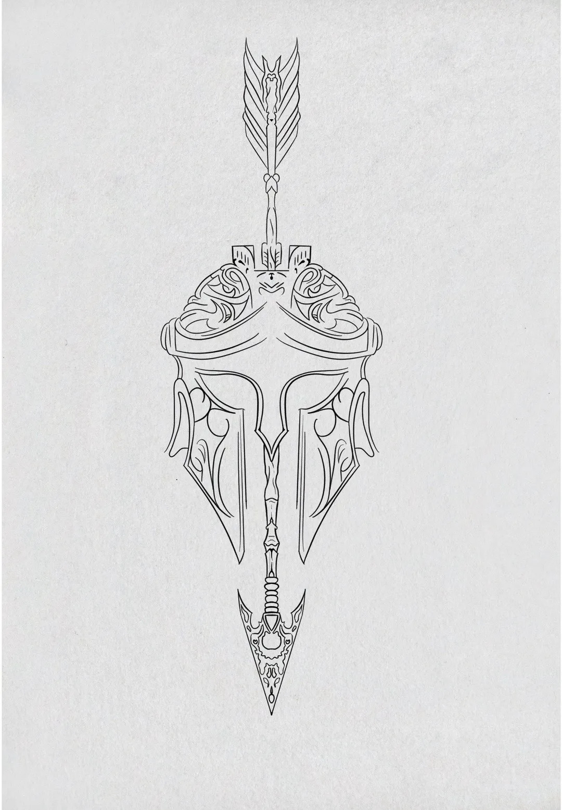

Depuis 2024
Tatouage
Old school et ornemental. Deux écoles opposées que j'aime pour la même raison : le trait ne pardonne rien. Pas de calque, pas de retour arrière, pas de « on verra au rendu ».
Pour tenir le rythme, je me suis imposé un défi : 50 tatouages en 50 jours. Cinquante flashs dessinés, un par jour, publiés au fur et à mesure. C'est ce qui m'a fait progresser le plus vite, et ce que je documente sur TikTok.



